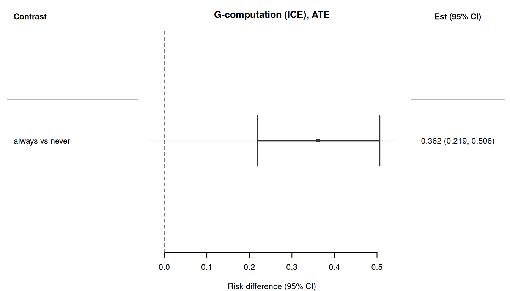

Code
library(causatr)
library(tinytable)
library(tinyplot)When treatment and confounders vary over time, standard regression methods give biased estimates even when adjusted for all confounders. G-methods solve this. causatr implements ICE (iterated conditional expectation) g-computation (Zivich et al., 2024), which requires models for the outcome only — no models for time-varying confounders are needed.
For doubly-robust protection, use estimator = "aipw". ICE-AIPW (Bang & Robins 2005) augments each backward regression step with a propensity-weighted residual correction, giving a consistent estimator if either the outcome regression or the propensity model at each time point is correctly specified. The same causat() + contrast() API applies; sandwich and bootstrap variance are both supported.
This vignette demonstrates ICE g-computation in causatr, covering:
history parameter (Markov order)library(causatr)
library(tinytable)
library(tinyplot)When \(A_0\) affects a time-varying confounder \(L_1\), and \(L_1\) in turn affects both \(A_1\) and \(Y\) (\(A_0 \to L_1 \to A_1\) and \(L_1 \to Y\)), ordinary regression cannot recover the marginal counterfactual mean \(\mathbb{E}[Y^{a_0, a_1}]\):
We reconstruct the dataset from Table 20.1 of Hernan & Robins (2025), scaled to 3,200 individuals observed at 2 time points. (The original table has 32,000; we use 1/10th for faster vignette rendering.) The DGP has a very specific property: every joint regime \((a_0, a_1)\) has the same marginal counterfactual mean \(\mathbb{E}[Y^{a_0, a_1}] = 60\), so the true causal contrast between any two regimes is exactly zero — the “null is true”. Crucially, the null holds only marginally: within strata of \(L_1\), the conditional effect of \(A_0\) is \(-8\). Treatment-confounder feedback is exactly the mechanism that lets a non-zero conditional effect average out to a zero marginal effect.
DGM. Two periods (\(k = 0, 1\)) with binary treatment \(A_k \in \{0, 1\}\), binary time-varying confounder \(L_1 \in \{0, 1\}\) (affected by \(A_0\)), and continuous outcome \(Y\) measured at \(k = 1\). The causal structure is \(A_0 \to L_1 \to A_1\), \(A_0 \to L_1 \to Y\), and \(A_0 \to Y\) (direct). The table is constructed so that the conditional effect of \(A_0\) given \(L_1\) is \(-8\), but this conditional effect averages to exactly zero marginally because \(A_0\) shifts the \(L_1\) distribution in a perfectly offsetting way. The structural equations implied by the table are:
\[ \begin{aligned} A_0 &\sim \text{Bernoulli}(p_{A_0}), \\ L_1 \mid A_0 &\sim \text{Bernoulli}\bigl(P(L_1 = 1 \mid A_0)\bigr), \\ A_1 \mid L_1 &\sim \text{Bernoulli}\bigl(P(A_1 = 1 \mid L_1)\bigr), \\ Y &= 84 - 8 \cdot A_0 - 32 \cdot L_1. \end{aligned} \]
The outcome is deterministic given \((A_0, L_1)\) and does not depend on \(A_1\) directly. The key property: \(P(L_1 = 1 \mid A_0 = 1) > P(L_1 = 1 \mid A_0 = 0)\), so \(A_0\) increases \(L_1\), and since \(L_1\) has a strong negative effect on \(Y\), the indirect harm through \(L_1\) exactly cancels the direct benefit. The known true value is \(\mathbb{E}[Y^{a_0, a_1}] = 60\) for all four joint regimes, so the ATE between any two regimes is exactly 0.
groups <- data.frame(
A0 = c(0, 0, 0, 0, 1, 1, 1, 1),
L1 = c(0, 0, 1, 1, 0, 0, 1, 1),
A1 = c(0, 1, 0, 1, 0, 1, 0, 1),
Y = c(84, 84, 52, 52, 76, 76, 44, 44),
N = c(240, 160, 240, 960, 480, 320, 160, 640)
)
rows <- lapply(seq_len(nrow(groups)), function(i) {
g <- groups[i, ]
off <- sum(groups$N[seq_len(i - 1)])
data.frame(id = seq_len(g$N) + off, A0 = g$A0, L1 = g$L1, A1 = g$A1, Y = g$Y)
})
wide <- do.call(rbind, rows)
t0 <- data.frame(id = wide$id, time = 0L, A = wide$A0, L = NA_real_, Y = NA_real_)
t1 <- data.frame(id = wide$id, time = 1L, A = wide$A1, L = wide$L1, Y = wide$Y)
long <- rbind(t0, t1)
head(long, 4)
#> id time A L Y
#> 1 1 0 0 NA NA
#> 2 2 0 0 NA NA
#> 3 3 0 0 NA NA
#> 4 4 0 0 NA NAThe data is in person-period (long) format: one row per individual per time point. L is a time-varying confounder (only measured at time 1).
Hernan & Robins (2025, Ch. 20) uses this table to make a pointed argument: neither of the two conventional regression strategies recovers the null. Truth is \(\mathbb{E}[Y^{1,1}] - \mathbb{E}[Y^{0,0}] = 0\), and in fact all four joint regimes have the same marginal counterfactual mean of \(60\).
Strategy 1 — unadjusted. Drop \(L_1\) and hope randomisation at each time point takes care of confounding:
wide_sub <- wide[!is.na(wide$Y), ]
naive_unadj <- lm(Y ~ A0 + A1, data = wide_sub)
round(coef(naive_unadj), 3)
#> (Intercept) A0 A1
#> 68.711 -1.244 -12.444Both coefficients move away from zero (\(A_0 \approx -1.24\), \(A_1 \approx -12.44\)). The \(A_1\) estimate is especially biased: \(L_1\) confounds \(A_1 \to Y\), and without adjustment that confounding leaks directly into the coefficient.
Strategy 2 — adjust for \(L_1\). The standard epidemiological reflex:
naive_fit <- lm(Y ~ A0 + A1 + L1, data = wide_sub)
naive_coefs <- coef(naive_fit)
round(naive_coefs, 3)
#> (Intercept) A0 A1 L1
#> 84 -8 0 -32Now \(A_1 = 0\) (correct, because in this DGP \(Y\) is a deterministic function of \(A_0\) and \(L_1\)), but \(A_0 = -8\) — the conditional effect of \(A_0\) within strata of \(L_1\). That is not the causal contrast we want. Adjusting for \(L_1\) blocks the \(A_0 \to L_1 \to Y\) path and leaves only the direct-effect residue, so \(A_0\) looks like a protective effect when in fact the marginal causal effect is zero.
The takeaway. One naive strategy biases \(A_1\); the other biases \(A_0\). There is no regression specification on this table that jointly returns \(A_0 = 0\) and \(A_1 = 0\). This is the null paradox that motivates g-methods: the only way to recover the null is to marginalise over the intervention-specific distribution of \(L_1\), which is exactly what ICE g-computation does below.
With causat(), specify id and time to trigger longitudinal mode. Baseline confounders go in confounders, time-varying confounders in confounders_tv. For finer control, use confounders_tv_outcome and confounders_tv_treatment to specify different time-varying covariates for the outcome and treatment models.
fit <- causat(
long,
outcome = "Y",
treatment = "A",
confounders = ~ 1,
confounders_tv = ~ L,
id = "id",
time = "time",
model_fn = stats::glm
)
fit
#> <causatr_fit>
#> Estimator: G-computation
#> Type: longitudinal
#> Outcome: Y (gaussian)
#> Treatment: A
#> Estimand: ATE
#> Confounders: ~1
#> TV conf.: ~L
#> ID: id
#> Time: time
#> N: 6400No models are fitted at this stage. ICE defers model fitting to contrast() because the sequential outcome models depend on the intervention being evaluated.
Compare “always treat” (A = 1 at every time) vs “never treat” (A = 0 at every time):
result <- contrast(
fit,
interventions = list(always = static(1), never = static(0)),
reference = "never",
type = "difference",
ci_method = "sandwich"
)
resultEstimator: gcomp · Estimand: ATE · Contrast: difference · CI method: sandwich · N: 3200
| intervention | estimate | se | ci_lower | ci_upper |
|---|---|---|---|---|
| always | 60 | 0.4 | 59.216 | 60.784 |
| never | 60 | 0.346 | 59.321 | 60.679 |
| comparison | estimate | se | ci_lower | ci_upper |
|---|---|---|---|---|
| always vs never | -0.00000000000009947598 | 0.529 | -1.037 | 1.037 |
ICE correctly recovers E[Y^{always}] = E[Y^{never}] = 60 and ATE = 0, as expected from the data generating process.
naive_ci <- confint(naive_fit)
est_df <- data.frame(
method = c("Naive (A0)", "Naive (A1)", "ICE"),
estimate = c(naive_coefs["A0"], naive_coefs["A1"], result$contrasts$estimate[1]),
ci_lower = c(naive_ci["A0", 1], naive_ci["A1", 1], result$contrasts$ci_lower[1]),
ci_upper = c(naive_ci["A0", 2], naive_ci["A1", 2], result$contrasts$ci_upper[1])
)
tinyplot(
estimate ~ method,
data = est_df,
type = "pointrange",
ymin = est_df$ci_lower,
ymax = est_df$ci_upper,
ylab = "Estimated treatment effect",
xlab = "",
main = "ICE recovers the null effect"
)
abline(h = 0, lty = 2, col = "grey40")
The default ci_method = "sandwich" uses the empirical sandwich estimator for stacked estimating equations (Zivich et al., 2024). This accounts for uncertainty from all K sequential outcome models, not just the final model.
result$estimates[, c("intervention", "estimate", "se")]
#> intervention estimate se
#> <char> <num> <num>
#> 1: always 60 0.4000000
#> 2: never 60 0.3464102The standard errors are finite and positive, confirming that the sandwich variance estimator is working correctly even with a large sample.
For robustness or when using flexible models (e.g., GAMs), bootstrap resamples individuals (all their time points together) and re-runs the full ICE procedure.
result_boot <- contrast(
fit,
interventions = list(always = static(1), never = static(0)),
reference = "never",
type = "difference",
ci_method = "bootstrap",
n_boot = 20L
)
result_bootEstimator: gcomp · Estimand: ATE · Contrast: difference · CI method: bootstrap · N: 3200
| intervention | estimate | se | ci_lower | ci_upper |
|---|---|---|---|---|
| always | 60 | 0.42 | 59.177 | 60.823 |
| never | 60 | 0.373 | 59.269 | 60.731 |
| comparison | estimate | se | ci_lower | ci_upper |
|---|---|---|---|---|
| always vs never | -0.00000000000009947598 | 0.629 | -1.234 | 1.234 |
The parallel and ncpus arguments enable parallel bootstrap replicates for larger datasets. Four backends are supported: "no" (sequential), "multicore" (Unix fork, default on most Linux/macOS setups), "snow" (cross-platform socket cluster, both via boot::boot()), and "future" (any active future::plan() — local multisession, remote plan(cluster, ...), or future.batchtools for HPC job arrays). "future" bypasses boot::boot() so the plan itself owns the scheduling; ncpus is ignored in that case.
# boot::boot parallel (fork / socket)
result_par <- contrast(
fit,
interventions = list(always = static(1), never = static(0)),
reference = "never",
ci_method = "bootstrap",
n_boot = 20L,
parallel = "multicore",
ncpus = 4L
)
# future backend (any future::plan())
library(future)
plan(multisession, workers = 4)
result_future <- contrast(
fit,
interventions = list(always = static(1), never = static(0)),
reference = "never",
ci_method = "bootstrap",
n_boot = 500L,
parallel = "future"
)se_df <- data.frame(
method = c("Sandwich", "Bootstrap"),
estimate = c(result$contrasts$estimate[1], result_boot$contrasts$estimate[1]),
ci_lower = c(result$contrasts$ci_lower[1], result_boot$contrasts$ci_lower[1]),
ci_upper = c(result$contrasts$ci_upper[1], result_boot$contrasts$ci_upper[1])
)
tinyplot(
estimate ~ method,
data = se_df,
type = "pointrange",
ymin = se_df$ci_lower,
ymax = se_df$ci_upper,
ylab = "ATE (always vs never)",
xlab = "Inference method",
main = "Sandwich vs bootstrap inference"
)
abline(h = 0, lty = 2, col = "grey40")
ICE supports dynamic treatment regimes where treatment depends on time-varying covariates. Here, individuals receive treatment only when L = 1 (the confounder is present):
result_dyn <- contrast(
fit,
interventions = list(
adaptive = dynamic(\(data, trt) ifelse(!is.na(data$L) & data$L > 0, 1L, 0L)),
always = static(1),
never = static(0)
),
reference = "never",
ci_method = "sandwich"
)
result_dynEstimator: gcomp · Estimand: ATE · Contrast: difference · CI method: sandwich · N: 3200
| intervention | estimate | se | ci_lower | ci_upper |
|---|---|---|---|---|
| adaptive | 60 | 0.346 | 59.321 | 60.679 |
| always | 60 | 0.4 | 59.216 | 60.784 |
| never | 60 | 0.346 | 59.321 | 60.679 |
| comparison | estimate | se | ci_lower | ci_upper |
|---|---|---|---|---|
| adaptive vs never | -0.00000000000006394885 | 0 | -0 | 0 |
| always vs never | -0.00000000000009947598 | 0.529 | -1.037 | 1.037 |
est <- result_dyn$estimates
tinyplot(
estimate ~ intervention,
data = est,
type = "pointrange",
ymin = est$ci_lower,
ymax = est$ci_upper,
ylab = "E[Y^a]",
xlab = "Intervention",
main = "Marginal means under different interventions"
)
abline(h = 60, lty = 2, col = "grey40")
All three interventions should return a marginal mean close to 60 (the structural truth for every joint regime in this null-effect DGP).
history parameterThe history parameter controls the Markov order — how many lags of treatment and time-varying confounders enter each outcome model.
history = 1 (default): Include one lag of A and L (first-order Markov).history = 2: Include two lags (A_{k-1}, A_{k-2}, L_{k-1}, L_{k-2}).history = Inf: Include full treatment and confounder history up to each time point.For this 2-time-point example, history = 1 and history = Inf are equivalent. With longer follow-up, higher-order histories capture longer-range dependencies but require more data per model.
fit_inf <- causat(
long,
outcome = "Y",
treatment = "A",
confounders = ~ 1,
confounders_tv = ~ L,
id = "id",
time = "time",
history = Inf,
model_fn = stats::glm
)
result_inf <- contrast(
fit_inf,
interventions = list(always = static(1), never = static(0)),
reference = "never",
ci_method = "sandwich"
)
result_infEstimator: gcomp · Estimand: ATE · Contrast: difference · CI method: sandwich · N: 3200
| intervention | estimate | se | ci_lower | ci_upper |
|---|---|---|---|---|
| always | 60 | 0.4 | 59.216 | 60.784 |
| never | 60 | 0.346 | 59.321 | 60.679 |
| comparison | estimate | se | ci_lower | ci_upper |
|---|---|---|---|---|
| always vs never | -0.00000000000009947598 | 0.529 | -1.037 | 1.037 |
To show ICE working with a known non-null effect, we simulate data with treatment-confounder feedback.
DGM. Two periods (\(k = 0, 1\)) with binary treatment \(A_k \in \{0, 1\}\), binary time-varying confounder \(L_k \in \{0, 1\}\), and continuous outcome \(Y\). Treatment assignment at each period depends on the current confounder via a logistic model; the confounder at \(k = 1\) is affected by prior treatment \(A_0\) (treatment-confounder feedback). The structural equations are:
\[ \begin{aligned} L_0 &\sim \text{Bernoulli}(0.5), \\ A_0 \mid L_0 &\sim \text{Bernoulli}\bigl(\text{logit}^{-1}(-0.5 + 0.5 \, L_0)\bigr), \\ L_1 \mid A_0, L_0 &\sim \text{Bernoulli}\bigl(\text{logit}^{-1}(-0.5 + 0.8 \, A_0 + 0.3 \, L_0)\bigr), \\ A_1 \mid L_1 &\sim \text{Bernoulli}\bigl(\text{logit}^{-1}(-0.5 + 0.5 \, L_1)\bigr), \\ Y \mid A_0, A_1, L_1 &= 50 + 2.5 \, A_0 + 2.5 \, A_1 - 3 \, L_1 + \varepsilon, \quad \varepsilon \sim N(0, 25). \end{aligned} \]
The structural ATE of “always treat” vs “never treat” is not simply \(2.5 + 2.5 = 5\), because \(A_0\) affects \(L_1\) (coefficient \(0.8\)), and \(L_1\) enters the outcome with coefficient \(-3\). Under “always treat”, \(A_0 = 1\) increases \(\mathbb{E}[L_1]\), and since \(L_1\) has a negative effect on \(Y\), this indirect path partially offsets the direct benefit:
\[ \text{ATE} = \underbrace{(2.5 + 2.5)}_{\text{direct}} - 3 \bigl(\mathbb{E}[L_1 \mid A_0\!=\!1] - \mathbb{E}[L_1 \mid A_0\!=\!0]\bigr) \approx 5 - 3 \times 0.196 \approx 4.41. \]
This is the same treatment-confounder feedback that makes naive regression biased.
set.seed(42)
n <- 2000
sim_id <- rep(seq_len(n), each = 2)
sim_time <- rep(0:1, n)
L0 <- rbinom(n, 1, 0.5)
A0 <- rbinom(n, 1, plogis(-0.5 + 0.5 * L0))
L1 <- rbinom(n, 1, plogis(-0.5 + 0.8 * A0 + 0.3 * L0))
A1 <- rbinom(n, 1, plogis(-0.5 + 0.5 * L1))
Y <- 50 + 2.5 * A0 + 2.5 * A1 - 3 * L1 + rnorm(n, 0, 5)
sim_long <- data.frame(
id = sim_id,
time = sim_time,
A = c(rbind(A0, A1)),
L = c(rbind(L0, L1)),
Y = c(rbind(NA_real_, Y))
)
fit_sim <- causat(
sim_long,
outcome = "Y",
treatment = "A",
confounders = ~ 1,
confounders_tv = ~ L,
id = "id",
time = "time",
model_fn = stats::glm
)
res_sim <- contrast(
fit_sim,
interventions = list(always = static(1), never = static(0)),
reference = "never",
ci_method = "sandwich"
)
res_simEstimator: gcomp · Estimand: ATE · Contrast: difference · CI method: sandwich · N: 2000
| intervention | estimate | se | ci_lower | ci_upper |
|---|---|---|---|---|
| always | 53.134 | 0.227 | 52.69 | 53.579 |
| never | 48.832 | 0.187 | 48.465 | 49.199 |
| comparison | estimate | se | ci_lower | ci_upper |
|---|---|---|---|---|
| always vs never | 4.303 | 0.336 | 3.644 | 4.961 |
The estimated ATE should be close to the true value of \(\approx 4.41\).
ICE also handles binary outcomes. The first outcome model uses binomial (actual 0/1 response), while subsequent pseudo-outcome models use quasibinomial (fractional logistic for predicted probabilities in [0, 1]).
DGM. This reuses the non-null simulation above (same SEM) with the continuous outcome binarised at \(Y > 50\):
\[ \begin{aligned} Y^* &= 50 + 2.5 \, A_0 + 2.5 \, A_1 - 3 \, L_1 + \varepsilon, \quad \varepsilon \sim N(0, 25), \\ Y &= \mathbf{1}(Y^* > 50). \end{aligned} \]
The resulting binary outcome does not have a clean closed-form ATE on the risk-difference scale, but the direction is positive (“always treat” increases \(P(Y = 1)\) relative to “never treat”) because both treatment coefficients are positive in the latent linear predictor.
sim_long_bin <- sim_long
sim_long_bin$Y[!is.na(sim_long_bin$Y)] <-
as.integer(sim_long_bin$Y[!is.na(sim_long_bin$Y)] > 50)
fit_bin <- causat(
sim_long_bin,
outcome = "Y",
treatment = "A",
confounders = ~ 1,
confounders_tv = ~ L,
family = "binomial",
id = "id",
time = "time",
model_fn = stats::glm
)
res_bin <- contrast(
fit_bin,
interventions = list(always = static(1), never = static(0)),
reference = "never",
type = "difference",
ci_method = "sandwich"
)
res_binEstimator: gcomp · Estimand: ATE · Contrast: difference · CI method: sandwich · N: 2000
| intervention | estimate | se | ci_lower | ci_upper |
|---|---|---|---|---|
| always | 0.728 | 0.018 | 0.693 | 0.764 |
| never | 0.415 | 0.018 | 0.381 | 0.449 |
| comparison | estimate | se | ci_lower | ci_upper |
|---|---|---|---|---|
| always vs never | 0.313 | 0.029 | 0.256 | 0.371 |
res_rr <- contrast(
fit_bin,
interventions = list(always = static(1), never = static(0)),
reference = "never",
type = "ratio",
ci_method = "sandwich"
)
res_rrEstimator: gcomp · Estimand: ATE · Contrast: ratio · CI method: sandwich · N: 2000
| intervention | estimate | se | ci_lower | ci_upper |
|---|---|---|---|---|
| always | 0.728 | 0.018 | 0.693 | 0.764 |
| never | 0.415 | 0.018 | 0.381 | 0.449 |
| comparison | estimate | se | ci_lower | ci_upper |
|---|---|---|---|---|
| always vs never | 1.754 | 0.098 | 1.572 | 1.958 |
The examples above use 2 time points for simplicity, but ICE scales to any number of periods. Here we simulate 4-period data with a binary treatment and binary outcome. The backward recursion fits 4 sequential models.
DGM. Four periods (\(k = 1, \dots, 4\)) with binary treatment \(A_k\), continuous time-varying confounder \(L_k\), continuous baseline confounder \(L_0\), and binary outcome \(Y\) measured at \(k = 4\). The confounder evolves with treatment feedback: at each step, \(L_k\) depends on \(L_{k-1}\) plus noise, and after observing \(A_k\) the next confounder shifts by \(0.3 \, A_k\). The structural equations are:
\[ \begin{aligned} L_0 &\sim N(0, 1), \\ L_k \mid L_{k-1}, A_{k-1} &= L_{k-1} + 0.3 \, A_{k-1} + \eta_k, \quad \eta_k \sim N(0, 0.25), \\ A_k \mid L_k &\sim \text{Bernoulli}\bigl(\text{logit}^{-1}(-0.3 + 0.4 \, L_k)\bigr), \\ Y \mid A_1, \dots, A_4, L_0 &\sim \text{Bernoulli}\bigl(\text{logit}^{-1}(-1.5 + 0.4 \, \textstyle\sum_{k=1}^{4} A_k + 0.3 \, L_0)\bigr). \end{aligned} \]
The outcome depends on cumulative treatment exposure \(\sum_k A_k\) and the baseline confounder \(L_0\). Under “always treat” (\(\sum A_k = 4\)) the log-odds shift by \(0.4 \times 4 = 1.6\) relative to “never treat” (\(\sum A_k = 0\)), so the risk difference on the probability scale is positive but does not have a simple closed form (it depends on the marginal distribution of \(L_0\)).
set.seed(99)
n_id <- 600
K <- 4
ids <- rep(seq_len(n_id), each = K)
times <- rep(seq_len(K), n_id)
L0 <- rep(rnorm(n_id), each = K)
sim_4p <- data.frame(id = ids, time = times, L0 = L0)
sim_4p$L <- NA_real_
sim_4p$A <- NA_integer_
for (i in seq_len(n_id)) {
rows <- which(sim_4p$id == i)
l_prev <- sim_4p$L0[rows[1]]
for (k in seq_along(rows)) {
sim_4p$L[rows[k]] <- l_prev + rnorm(1, 0, 0.5)
sim_4p$A[rows[k]] <- rbinom(1, 1, plogis(-0.3 + 0.4 * sim_4p$L[rows[k]]))
l_prev <- sim_4p$L[rows[k]] + 0.3 * sim_4p$A[rows[k]]
}
}
sim_4p$Y <- NA_real_
for (i in seq_len(n_id)) {
rows <- which(sim_4p$id == i)
cum_a <- sum(sim_4p$A[rows])
sim_4p$Y[rows[K]] <- rbinom(
1, 1,
plogis(-1.5 + 0.4 * cum_a + 0.3 * sim_4p$L0[rows[1]])
)
}
fit_4p <- causat(
sim_4p,
outcome = "Y",
treatment = "A",
confounders = ~ L0,
confounders_tv = ~ L,
family = "binomial",
id = "id",
time = "time",
model_fn = stats::glm
)
res_4p <- contrast(
fit_4p,
interventions = list(always = static(1), never = static(0)),
reference = "never",
type = "difference",
ci_method = "sandwich"
)
res_4pEstimator: gcomp · Estimand: ATE · Contrast: difference · CI method: sandwich · N: 600
| intervention | estimate | se | ci_lower | ci_upper |
|---|---|---|---|---|
| always | 0.528 | 0.052 | 0.426 | 0.63 |
| never | 0.166 | 0.029 | 0.109 | 0.222 |
| comparison | estimate | se | ci_lower | ci_upper |
|---|---|---|---|---|
| always vs never | 0.362 | 0.073 | 0.219 | 0.506 |
plot(res_4p)
tt(tidy(res_4p), digits = 3)| term | estimate | std.error | type | conf.low | conf.high |
|---|---|---|---|---|---|
| always vs never | 0.362 | 0.0733 | contrast | 0.219 | 0.506 |
The ICE sandwich variance correctly propagates uncertainty through all 4 sequential models via the stacked estimating equations cascade.
ICE also supports continuous time-varying treatments combined with the modified-treatment-policy (MTP) interventions: shift(), scale_by(), and threshold(). The intervention is applied to the current-time treatment at each backward step; ice_apply_intervention_long() explicitly does not recompute the lag columns from the intervened values (this would double-count a non-static intervention — see CLAUDE.md for the structural reason).
DGM. Two periods (\(k = 0, 1\)) with continuous treatment \(A_k \in \mathbb{R}\), continuous confounder \(L_k\), and continuous outcome \(Y\). Treatment-confounder feedback is present: \(A_0\) affects \(L_1\) (coefficient \(0.5\)), and \(L_1\) affects \(A_1\) (coefficient \(0.5\)). The structural equations are:
\[ \begin{aligned} L_0 &\sim N(0, 1), \\ A_0 &= 1 + 0.4 \, L_0 + \eta_0, \quad \eta_0 \sim N(0, 1), \\ L_1 &= 0.3 \, L_0 + 0.5 \, A_0 + \eta_1, \quad \eta_1 \sim N(0, 1), \\ A_1 &= 1 + 0.5 \, L_1 + \eta_2, \quad \eta_2 \sim N(0, 1), \\ Y &= 2 + 1.5 \, A_0 + 2 \, A_1 + 0.5 \, L_0 - 0.3 \, L_1 + \varepsilon, \quad \varepsilon \sim N(0, 1). \end{aligned} \]
For a shift(-1) MTP (reduce each \(A_k\) by 1 at each period), the structural causal effect on \(Y\) relative to the natural course accounts for both direct and indirect paths. Shifting \(A_0\) by \(-1\) also shifts \(L_1\) by \(-0.5\) (coefficient \(0.5\) in the \(L_1\) equation), which in turn shifts the natural value of \(A_1\) by \(-0.25\) (coefficient \(0.5\) in the \(A_1\) equation). The shifted \(A_1\) is then reduced by a further \(-1\) by the MTP. The total effect on \(Y\) is:
\[ 1.5 \times (-1) + 2 \times (-1.25) + (-0.3) \times (-0.5) = -1.5 - 2.5 + 0.15 = -3.85. \]
set.seed(101)
n <- 800
sim_id <- rep(seq_len(n), each = 2)
sim_time <- rep(0:1, n)
L0 <- rnorm(n)
A0 <- 1 + 0.4 * L0 + rnorm(n)
L1 <- 0.3 * L0 + 0.5 * A0 + rnorm(n)
A1 <- 1 + 0.5 * L1 + rnorm(n)
Y <- 2 + 1.5 * A0 + 2 * A1 + 0.5 * L0 - 0.3 * L1 + rnorm(n)
cont_long <- data.frame(
id = sim_id,
time = sim_time,
A = c(rbind(A0, A1)),
L = c(rbind(L0, L1)),
Y = c(rbind(NA_real_, Y))
)
fit_cont <- causat(
cont_long,
outcome = "Y",
treatment = "A",
confounders = ~ 1,
confounders_tv = ~ L,
id = "id",
time = "time",
model_fn = stats::glm
)
res_mtp <- contrast(
fit_cont,
interventions = list(
observed = NULL,
shift_m1 = shift(-1),
halved = scale_by(0.5),
capped = threshold(0, 1)
),
reference = "observed",
type = "difference",
ci_method = "sandwich"
)
res_mtpEstimator: gcomp · Estimand: ATE · Contrast: difference · CI method: sandwich · N: 800
| intervention | estimate | se | ci_lower | ci_upper |
|---|---|---|---|---|
| observed | 5.904 | 0.117 | 5.675 | 6.134 |
| shift_m1 | 2.061 | 0.147 | 1.773 | 2.349 |
| halved | 3.799 | 0.075 | 3.652 | 3.946 |
| capped | 4.326 | 0.059 | 4.21 | 4.443 |
| comparison | estimate | se | ci_lower | ci_upper |
|---|---|---|---|---|
| shift_m1 vs observed | -3.844 | 0.086 | -4.013 | -3.674 |
| halved vs observed | -2.105 | 0.066 | -2.235 | -1.976 |
| capped vs observed | -1.578 | 0.084 | -1.743 | -1.414 |
Structural truth for shift(-1) is \(-3.85\) (see derivation above). The shift_m1 estimate should be close to this value.
ICE g-computation models the outcome at each period and iterates backward. The IPW analogue models the treatment density at each period and accumulates a per-id density-ratio weight, then fits a weighted final-period MSM. Both target the same counterfactual mean \(E[Y^d]\); agreement between them is the methodological-triangulation test causatr is built around.
The mathematical structure is the same chain rule we used for multivariate IPW (Phase 8) but indexed by time rather than treatment component. For an intervention \(d\) applied at every period \(k = 0, 1, \ldots, K\):
\[ W_i = \prod_{k=0}^{K} \frac{f_k\bigl(d(A_{k,i}, L_{k,i}) \mid \bar A_{k-1,i}^{\mathrm{obs}}, \bar L_{k,i}\bigr) \cdot \lvert \mathrm{Jac}\,d^{-1} \rvert}{f_k\bigl(A_{k,i} \mid \bar A_{k-1,i}^{\mathrm{obs}}, \bar L_{k,i}\bigr)}. \]
Both numerator and denominator condition on observed upstream treatments — the sequential-MTP semantics of Robins, Hernán, Brumback (2000) and Díaz et al. (2023). The MSM is intercept-only Hájek on the final-period rows, weighted by the per-id cumulative product; the (sole) coefficient is \(E[Y^d]\).
fit_ipw_long <- causat(
cont_long,
outcome = "Y",
treatment = "A",
confounders = ~ 1,
confounders_tv = ~ L,
id = "id",
time = "time",
estimator = "ipw",
model_fn = stats::glm,
propensity_model_fn = stats::glm
)
res_ipw_long <- contrast(
fit_ipw_long,
interventions = list(observed = NULL, shift_m1 = shift(-1)),
reference = "observed",
type = "difference",
ci_method = "sandwich"
)
res_ipw_longEstimator: ipw · Estimand: ATE · Contrast: difference · CI method: sandwich · N: 800
| intervention | estimate | se | ci_lower | ci_upper |
|---|---|---|---|---|
| observed | 5.904 | 0.117 | 5.675 | 6.134 |
| shift_m1 | 2.341 | 0.254 | 1.842 | 2.839 |
| comparison | estimate | se | ci_lower | ci_upper |
|---|---|---|---|---|
| shift_m1 vs observed | -3.564 | 0.234 | -4.022 | -3.105 |
ICE g-comp and longitudinal IPW estimate the same target parameter, so on a correctly-specified linear-Gaussian DGP they should agree on the point estimate up to Monte Carlo error. Sandwich SEs differ — IPW typically has heavier variance than g-computation when the outcome model is correct, so the IPW SE is usually larger.
res_mtp$contrasts
#> comparison estimate se ci_lower ci_upper
#> <char> <num> <num> <num> <num>
#> 1: shift_m1 vs observed -3.843574 0.08631052 -4.012739 -3.674408
#> 2: halved vs observed -2.105375 0.06595945 -2.234654 -1.976097
#> 3: capped vs observed -1.578207 0.08385391 -1.742558 -1.413857
res_ipw_long$contrasts
#> comparison estimate se ci_lower ci_upper
#> <char> <num> <num> <num> <num>
#> 1: shift_m1 vs observed -3.563666 0.2337656 -4.021838 -3.105494Supported interventions. static() / shift() / scale_by() / dynamic() are dispatched per period through the same family-aware gates as point IPW (check_intervention_family_compat()). Natural course (NULL) collapses every per-period weight to 1 and recovers the observed marginal mean.
Bootstrap. ci_method = "bootstrap" resamples individuals (every person-period row of a sampled id travels together). Cloning ids that are sampled multiple times mirrors the ICE bootstrap convention so within-person dependence is preserved.
res_ipw_boot <- contrast(
fit_ipw_long,
interventions = list(observed = NULL, shift_m1 = shift(-1)),
reference = "observed",
type = "difference",
ci_method = "bootstrap",
n_boot = 100
)
res_ipw_boot$contrasts
#> comparison estimate se ci_lower ci_upper
#> <char> <num> <num> <num> <num>
#> 1: shift_m1 vs observed -3.563666 0.2130336 -3.981204 -3.146128Sequential positivity warning. When any per-period weight has a heavy tail (max > 100 by default) the engine emits a causatr_longitudinal_seq_positivity warning naming the offending period(s) and their per-period max weight. The cumulative product loses period attribution, so this per-period diagnostic is the primary way to identify which time step is the bottleneck.
stabilize = "marginal" swaps each period’s numerator density for a marginal model \(g_k(A_k \mid \bar A_{k-1}, V)\) that drops the time-varying confounder \(L_k\) (and optionally adds a user-supplied baseline conditioning set \(V\) via numerator = ~ V). The denominator stays at the full-\(L\) density. Per-period weight becomes \(g_k(d(A_k) \mid \bar A_{k-1}, V) \cdot \lvert \mathrm{Jac} \rvert /
f_k(A_k \mid \bar A_{k-1}, \bar L_k)\), which dampens the multiplicative \(L\)-dependence across \(K\) factors and typically reduces the cumulative product’s variance.
fit_ipw_long_stab <- causat(
cont_long,
outcome = "Y",
treatment = "A",
confounders = ~ 1,
confounders_tv = ~ L,
id = "id",
time = "time",
estimator = "ipw",
stabilize = "marginal",
model_fn = stats::glm,
propensity_model_fn = stats::glm
)
contrast(
fit_ipw_long_stab,
interventions = list(observed = NULL, shift_m1 = shift(-1)),
reference = "observed",
type = "difference",
ci_method = "sandwich"
)Estimator: ipw · Estimand: ATE · Contrast: difference · CI method: sandwich · N: 800
| intervention | estimate | se | ci_lower | ci_upper |
|---|---|---|---|---|
| observed | 5.904 | 0.08 | 5.747 | 6.061 |
| shift_m1 | 2.805 | 0.175 | 2.462 | 3.147 |
| comparison | estimate | se | ci_lower | ci_upper |
|---|---|---|---|---|
| shift_m1 vs observed | -3.1 | 0.173 | -3.439 | -2.76 |
By default the per-period numerator drops every confounder and conditions only on prior treatment lags. A custom numerator = formula adds baseline-only covariates on top of the lags, which typically gives the most stable contrast estimate when the structural treatment generation depends on baseline characteristics.
Sandwich variance treats the numerator parameters as fixed (same nuisance-fixed convention as Phase 8e for multivariate IPW); bootstrap refits both numerator and denominator per replicate and captures the full uncertainty.
When confounders = includes an A:modifier interaction term, the per-period propensity formulas automatically strip the treatment-touching interaction (the modifier main effect is kept), and the final-period MSM expands from Y ~ 1 to Y ~ 1 + modifier so predict() returns stratum-specific counterfactual means.
fit_em <- causat(
long_data,
outcome = "Y",
treatment = "A",
confounders = ~ baseline + sex + A:sex,
confounders_tv = ~ L,
id = "id",
time = "time",
estimator = "ipw",
model_fn = stats::glm,
propensity_model_fn = stats::glm
)
contrast(
fit_em,
interventions = list(a = static(1), z = static(0)),
reference = "z",
by = "sex"
)Known limitation (Robins 2000). Under longitudinal IPW, the modifier MUST be a baseline covariate. A time-varying modifier in an MSM conditions on a post-treatment variable, which biases the estimand via mediator and collider paths. causatr does not enforce baseline-ness at runtime (time-varying status isn’t inferable from data); the constraint is documented only. The scientifically correct tool for time-varying effect modification is a structural nested model (Phase 18; etverse/snmestr).
What’s not yet supported. Multivariate longitudinal treatment and per-period ipsi() are rejected with _pending classed errors. Use estimator = "gcomp" (ICE) for those scenarios today.
When multiple treatments vary over time (e.g. two drugs dosed jointly), pass a character vector to treatment = and supply each intervention as a named sub-list. Lag columns are built per-component by prepare_data().
DGM. Two periods (\(k = 0, 1\)) with two binary treatments \(A_{1,k}, A_{2,k} \in \{0, 1\}\), a continuous confounder \(L_k\), and continuous outcome \(Y\). Both treatments at \(k = 0\) feed into the confounder \(L_1\), creating treatment-confounder feedback. The structural equations are:
\[ \begin{aligned} L_0 &\sim N(0, 1), \\ A_{1,0} \mid L_0 &\sim \text{Bernoulli}\bigl(\text{logit}^{-1}(0.3 \, L_0)\bigr), \\ A_{2,0} \mid L_0 &\sim \text{Bernoulli}\bigl(\text{logit}^{-1}(0.1 \, L_0)\bigr), \\ L_1 &= 0.3 \, L_0 + 0.4 \, A_{1,0} + 0.2 \, A_{2,0} + \eta, \quad \eta \sim N(0, 1), \\ A_{1,1} \mid L_1 &\sim \text{Bernoulli}\bigl(\text{logit}^{-1}(0.3 \, L_1)\bigr), \\ A_{2,1} \mid L_1 &\sim \text{Bernoulli}\bigl(\text{logit}^{-1}(0.1 \, L_1)\bigr), \\ Y &= 2 + 1.5 \, A_{1,0} + 1.5 \, A_{1,1} + 0.8 \, A_{2,0} + 0.8 \, A_{2,1} + 0.5 \, L_1 + \varepsilon, \quad \varepsilon \sim N(0, 1). \end{aligned} \]
The outcome is linear in both treatments at both periods. The structural ATE of “both on” vs “both off” includes the indirect path through \(L_1\): setting \(A_{1,0} = A_{2,0} = 1\) shifts \(\mathbb{E}[L_1]\) by \(0.4 + 0.2 = 0.6\) relative to “both off”, and \(L_1\) enters \(Y\) with coefficient \(0.5\), adding \(0.3\) to the direct sum \(2 \times (1.5 + 0.8) = 4.6\):
\[ \text{ATE} = \underbrace{4.6}_{\text{direct}} + \underbrace{0.5 \times 0.6}_{\text{indirect via } L_1} = 4.9. \]
set.seed(202)
n <- 600
sim_id <- rep(seq_len(n), each = 2)
sim_time <- rep(0:1, n)
L0 <- rnorm(n)
A10 <- rbinom(n, 1, plogis(0.3 * L0))
A20 <- rbinom(n, 1, plogis(0.1 * L0))
L1 <- 0.3 * L0 + 0.4 * A10 + 0.2 * A20 + rnorm(n)
A11 <- rbinom(n, 1, plogis(0.3 * L1))
A21 <- rbinom(n, 1, plogis(0.1 * L1))
Y <- 2 + 1.5 * A10 + 1.5 * A11 + 0.8 * A20 + 0.8 * A21 + 0.5 * L1 + rnorm(n)
mv_long <- data.frame(
id = sim_id,
time = sim_time,
A1 = c(rbind(A10, A11)),
A2 = c(rbind(A20, A21)),
L = c(rbind(L0, L1)),
Y = c(rbind(NA_real_, Y))
)
fit_mv_long <- causat(
mv_long,
outcome = "Y",
treatment = c("A1", "A2"),
confounders = ~ 1,
confounders_tv = ~ L,
id = "id",
time = "time",
model_fn = stats::glm
)
res_mv_long <- contrast(
fit_mv_long,
interventions = list(
both_on = list(A1 = static(1), A2 = static(1)),
both_off = list(A1 = static(0), A2 = static(0))
),
reference = "both_off",
type = "difference"
)
res_mv_longEstimator: gcomp · Estimand: ATE · Contrast: difference · CI method: sandwich · N: 600
| intervention | estimate | se | ci_lower | ci_upper |
|---|---|---|---|---|
| both_on | 6.914 | 0.095 | 6.728 | 7.1 |
| both_off | 1.967 | 0.098 | 1.774 | 2.16 |
| comparison | estimate | se | ci_lower | ci_upper |
|---|---|---|---|---|
| both_on vs both_off | 4.947 | 0.17 | 4.613 | 5.281 |
Structural truth: both_on − both_off = 4.9 (direct effects \(4.6\) plus indirect \(0.3\) via \(L_1\)).
External weights — survey weights or pre-computed IPCW — pass through every backward-step model via model_fn’s weights = argument. The ICE sandwich variance engine accounts for heterogeneous weights via the A_{k-1,k} cascade gradient (see variance-theory.qmd §5.4 and the inline comment in R/variance_if.R:variance_if_ice_one).
DGM. Two periods (\(k = 0, 1\)) with binary treatment \(A_k\), binary confounder \(L_k\), continuous outcome \(Y\), and uninformative survey weights drawn independently from \(\text{Uniform}(0.5, 2.0)\). The structural equations are:
\[ \begin{aligned} L_0 &\sim \text{Bernoulli}(0.5), \\ A_0 \mid L_0 &\sim \text{Bernoulli}\bigl(\text{logit}^{-1}(-0.2 + 0.6 \, L_0)\bigr), \\ L_1 \mid A_0, L_0 &\sim \text{Bernoulli}\bigl(\text{logit}^{-1}(-0.2 + 0.8 \, A_0 + 0.3 \, L_0)\bigr), \\ A_1 \mid L_1 &\sim \text{Bernoulli}\bigl(\text{logit}^{-1}(-0.2 + 0.6 \, L_1)\bigr), \\ Y &= 2 + 2.5 \, A_0 + 2.5 \, A_1 - 0.5 \, L_1 + \varepsilon, \quad \varepsilon \sim N(0, 1), \\ w_i &\sim \text{Uniform}(0.5, 2.0). \end{aligned} \]
Since the weights are non-informative (independent of everything), the structural ATE of “always treat” vs “never treat” is the same as the unweighted case. The direct effects sum to \(2.5 + 2.5 = 5\), but \(A_0\) shifts \(\mathbb{E}[L_1]\) by \(\approx 0.19\), and \(L_1\) enters \(Y\) with coefficient \(-0.5\), giving a true ATE \(\approx 4.90\). The purpose of this example is to demonstrate that the ICE sandwich variance engine correctly propagates heterogeneous weights through the backward recursion.
set.seed(303)
n <- 500
sim_id <- rep(seq_len(n), each = 2)
sim_time <- rep(0:1, n)
L0 <- rbinom(n, 1, 0.5)
A0 <- rbinom(n, 1, plogis(-0.2 + 0.6 * L0))
L1 <- rbinom(n, 1, plogis(-0.2 + 0.8 * A0 + 0.3 * L0))
A1 <- rbinom(n, 1, plogis(-0.2 + 0.6 * L1))
Y <- 2 + 2.5 * A0 + 2.5 * A1 - 0.5 * L1 + rnorm(n)
weights_long <- runif(2 * n, 0.5, 2.0)
w_long_df <- data.frame(
id = sim_id,
time = sim_time,
A = c(rbind(A0, A1)),
L = c(rbind(L0, L1)),
Y = c(rbind(NA_real_, Y))
)
fit_w <- causat(
w_long_df,
outcome = "Y",
treatment = "A",
confounders = ~ 1,
confounders_tv = ~ L,
id = "id",
time = "time",
weights = weights_long,
model_fn = stats::glm
)
res_w <- contrast(
fit_w,
interventions = list(always = static(1), never = static(0)),
reference = "never",
type = "difference",
ci_method = "sandwich"
)
res_wEstimator: gcomp · Estimand: ATE · Contrast: difference · CI method: sandwich · N: 500
| intervention | estimate | se | ci_lower | ci_upper |
|---|---|---|---|---|
| always | 6.756 | 0.075 | 6.61 | 6.902 |
| never | 1.629 | 0.099 | 1.434 | 1.823 |
| comparison | estimate | se | ci_lower | ci_upper |
|---|---|---|---|---|
| always vs never | 5.128 | 0.139 | 4.854 | 5.401 |
Pass a time-varying censoring indicator via censoring =. At each backward step, ICE restricts the fit to uncensored rows; predictions are made for the target population regardless of censoring status, so the estimator is valid under the usual sequential-randomization assumption on the censoring mechanism.
DGM. Two periods (\(k = 0, 1\)) with binary treatment \(A_k\), binary confounder \(L_k\), continuous outcome \(Y\), and a censoring indicator \(C_1\) at \(k = 1\) that depends on treatment and baseline confounder. About 20% of individuals are censored at the second period. The structural equations are:
\[ \begin{aligned} L_0 &\sim \text{Bernoulli}(0.5), \\ A_0 \mid L_0 &\sim \text{Bernoulli}\bigl(\text{logit}^{-1}(-0.2 + 0.6 \, L_0)\bigr), \\ L_1 \mid A_0, L_0 &\sim \text{Bernoulli}\bigl(\text{logit}^{-1}(-0.2 + 0.8 \, A_0 + 0.3 \, L_0)\bigr), \\ A_1 \mid L_1 &\sim \text{Bernoulli}\bigl(\text{logit}^{-1}(-0.2 + 0.6 \, L_1)\bigr), \\ Y^* &= 2 + 2 \, A_0 + 2 \, A_1 - 0.5 \, L_1 + \varepsilon, \quad \varepsilon \sim N(0, 1), \\ C_1 \mid A_0, L_0 &\sim \text{Bernoulli}\bigl(\text{logit}^{-1}(-2 + 0.5 \, A_0 + 0.3 \, L_0)\bigr), \\ Y &= \begin{cases} Y^* & \text{if } C_1 = 0, \\ \text{NA} & \text{if } C_1 = 1. \end{cases} \end{aligned} \]
The structural ATE of “always treat” vs “never treat” on the full (uncensored) outcome is \(\approx 3.90\) (direct effects \(2 + 2 = 4\) minus \(0.5 \times 0.19 \approx 0.10\) for the indirect path \(A_0 \to L_1 \to Y\)). Under the censoring-at-random assumption (\(Y^{a_0, a_1} \perp C_1 \mid A_0, L_0\)), ICE with row filtering recovers this effect by fitting the outcome model on uncensored rows and standardising over the full population.
set.seed(404)
n <- 500
sim_id <- rep(seq_len(n), each = 2)
sim_time <- rep(0:1, n)
L0 <- rbinom(n, 1, 0.5)
A0 <- rbinom(n, 1, plogis(-0.2 + 0.6 * L0))
L1 <- rbinom(n, 1, plogis(-0.2 + 0.8 * A0 + 0.3 * L0))
A1 <- rbinom(n, 1, plogis(-0.2 + 0.6 * L1))
Y_full <- 2 + 2 * A0 + 2 * A1 - 0.5 * L1 + rnorm(n)
# 20% censoring at t = 1 depending on A0 + L0.
C1 <- rbinom(n, 1, plogis(-2 + 0.5 * A0 + 0.3 * L0))
Y <- ifelse(C1 == 1, NA_real_, Y_full)
cens_long <- data.frame(
id = sim_id,
time = sim_time,
A = c(rbind(A0, A1)),
L = c(rbind(L0, L1)),
C = c(rbind(0L, C1)),
Y = c(rbind(NA_real_, Y))
)
fit_c <- causat(
cens_long,
outcome = "Y",
treatment = "A",
confounders = ~ 1,
confounders_tv = ~ L,
id = "id",
time = "time",
censoring = "C",
model_fn = stats::glm
)
res_c <- contrast(
fit_c,
interventions = list(always = static(1), never = static(0)),
reference = "never",
type = "difference",
ci_method = "sandwich"
)
res_cEstimator: gcomp · Estimand: ATE · Contrast: difference · CI method: sandwich · N: 500
| intervention | estimate | se | ci_lower | ci_upper |
|---|---|---|---|---|
| always | 5.721 | 0.081 | 5.562 | 5.879 |
| never | 1.683 | 0.09 | 1.506 | 1.86 |
| comparison | estimate | se | ci_lower | ci_upper |
|---|---|---|---|---|
| always vs never | 4.038 | 0.138 | 3.767 | 4.309 |
Structural truth \(\approx 3.90\) (see derivation above). The estimate should be close, and the sandwich SE reflects the censoring-induced reduction in effective sample size at each step.
ICE g-computation (Zivich et al., 2024) works backward in time:
This requires only outcome models — unlike forward simulation (“big g-formula”), no models for time-varying confounders are needed.
| ICE g-comp | Forward simulation | |
|---|---|---|
| Models needed | Outcome only (at each time) | Outcome + every time-varying confounder |
| Inference | Sandwich (stacked EE) | Bootstrap only |
| Speed | Fast | Slow (many models + simulation) |
| Model misspecification | K models | K + p*K models |
| Implementation | causatr | gfoRmula |
confounders: Baseline (time-invariant) confounders. Enter every outcome model at every time step.confounders_tv: Time-varying confounders. Included with their lags (controlled by history).history: Markov order. history = 1 (default) includes one lag of treatment and TV confounders. history = Inf includes full history.censoring: Time-varying censoring indicator (1 = censored). ICE restricts to uncensored at each backward step; the resulting estimator is IPCW-valid when the censoring mechanism is conditionally random given the covariate history.weights: external survey weights or pre-computed IPCW. Accepts either a numeric vector or a survey::svydesign object directly; with a design, the sampling weights are unpacked via stats::weights() and the design’s first-stage PSU is auto-adopted as the contrast-time cluster. Validated upfront by check_weights() (rejects NA, Inf, negative, mis-sized) and propagated through every step of the backward recursion. The ICE sandwich variance engine accounts for the weights via the A_{k-1,k} cascade gradient — dropping them would underestimate the SE under heterogeneous weights by roughly a factor of two.cluster: column name in data identifying a design cluster (site, household, PSU, repeated-measures id). Preserved through prepare_data() and consumed at contrast time by the sum-within-cluster-then-square IF aggregator (vcov_from_if(cluster = ...)). Defaults from the fit into contrast() so users don’t have to repeat it; override or switch off at contrast time by passing a different cluster = (or NULL). Matching rejects this argument with causatr_bad_cluster because its subclass clustering is structural.parallel / ncpus: four backends — "no", "multicore", "snow" (all via boot::boot()), and "future" (via future.apply::future_lapply() so any active future::plan() is honoured). Defaults to getOption("boot.parallel", "no") / getOption("boot.ncpus", 1L) so a session-wide options(boot.parallel = "multicore") flips parallelism on for every contrast() call. ncpus is ignored when parallel = "future" (the plan owns the worker count).For a full enumeration of the sandwich-vs-bootstrap, continuous/binary, external-weights, censoring, multivariate-treatment, and ipsi-rejection combinations, see FEATURE_COVERAGE_MATRIX.md §“Method 4 — ICE longitudinal g-computation” (20+ truth-pinned rows against lmtp::lmtp_tmle / analytic targets / Hernán & Robins Table 20.1).
When confounders includes an A:modifier interaction term (e.g. ~ L0 + sex + A:sex), ICE auto-expands the interaction across treatment lags. At each backward step, the outcome model includes not only A:sex (current period) but also lag1_A:sex, lag2_A:sex, etc. for all available lags. This captures how the effect of treatment at every time point is modified by the baseline variable.
Without this expansion, ICE would capture effect modification only at the current treatment period, collapsing roughly half the intended heterogeneity in a 2-period DGP.
DGM. A 2-period DGP with sex-specific treatment effects:
\[ \begin{aligned} L_0, \text{sex} &\sim N(0,1),\; \text{Bern}(0.5) \\ A_0 \mid L_0 &\sim \text{Bern}(\text{expit}(0.3 L_0)) \\ L_1 \mid A_0, L_0 &= A_0 + 0.5 L_0 + \varepsilon \\ A_1 \mid L_1 &\sim \text{Bern}(\text{expit}(0.3 L_1)) \\ Y \mid \bar{A}, \bar{L}, \text{sex} &= 10 + (2 + 1.5 \cdot \text{sex})(A_0 + A_1) + L_0 + L_1 + \varepsilon \end{aligned} \]
True always-vs-never ATE: \(\text{ATE}|\text{sex}=0 = 5\), \(\text{ATE}|\text{sex}=1 = 8\).
set.seed(42)
n <- 5000
L0 <- rnorm(n)
sex <- rbinom(n, 1, 0.5)
Ltv0 <- 0.5 * L0 + rnorm(n, 0, 0.5)
A0 <- rbinom(n, 1, plogis(0.3 * L0))
L1 <- A0 + 0.5 * L0 + rnorm(n, 0, 0.5)
A1 <- rbinom(n, 1, plogis(0.3 * L1))
Y <- 10 + (2 + 1.5 * sex) * (A0 + A1) + Ltv0 + L1 + rnorm(n)
d_em <- rbind(
data.frame(id = 1:n, time = 0L, A = A0, L = Ltv0,
L0 = L0, sex = sex, Y = NA_real_),
data.frame(id = 1:n, time = 1L, A = A1, L = L1,
L0 = L0, sex = sex, Y = Y)
)
fit_ice_em <- causat(
d_em,
outcome = "Y",
treatment = "A",
confounders = ~ L0 + sex + A:sex,
confounders_tv = ~ L,
id = "id",
time = "time",
model_fn = stats::glm
)
res_ice_em <- contrast(
fit_ice_em,
interventions = list(always = static(1), never = static(0)),
reference = "never",
type = "difference",
ci_method = "sandwich",
by = "sex"
)
res_ice_emEstimator: gcomp · Estimand: ATE · Contrast: difference · CI method: sandwich · N: 5000
| intervention | estimate | se | ci_lower | ci_upper | by | n_by |
|---|---|---|---|---|---|---|
| always | 15.052 | 0.044 | 14.966 | 15.138 | 0 | 2466 |
| never | 10.01 | 0.044 | 9.924 | 10.097 | 0 | 2466 |
| always | 17.974 | 0.042 | 17.892 | 18.057 | 1 | 2534 |
| never | 9.943 | 0.044 | 9.856 | 10.029 | 1 | 2534 |
| comparison | estimate | se | ci_lower | ci_upper | by | n_by |
|---|---|---|---|---|---|---|
| always vs never | 5.042 | 0.062 | 4.921 | 5.163 | 0 | 2466 |
| always vs never | 8.032 | 0.058 | 7.918 | 8.146 | 1 | 2534 |
The A:sex interaction is auto-expanded at the final backward step to include lag1_A:sex, so both treatment periods contribute sex-specific effects. The sandwich variance engine requires no special handling — the model matrices simply grow to accommodate the additional interaction columns, and the ICE cascade gradient propagates through them.
Legend. ✅ covered and truth-pinned in tests (either against Table 20.1 or against lmtp::lmtp_tmle()) · 🟡 smoke test only · ⛔ rejected with an informative error.
| Treatment | Outcome | Intervention | Estimand | Contrast | Inference | Weights | Status |
|---|---|---|---|---|---|---|---|
| Binary | Continuous | Static (always vs never) | ATE | Difference | Sandwich | none | ✅ Table 20.1 |
| Binary | Continuous | Static | ATE | Difference | Bootstrap | none | ✅ Table 20.1 |
| Binary | Continuous | Dynamic (rule on L) | ATE | Difference | Sandwich | none | ✅ |
| Binary | Continuous | Static | ATE | Difference | Sandwich + bootstrap | survey | ✅ |
| Continuous | Continuous | Shift / Scale / Threshold | ATE | Difference | Sandwich | none | ✅ (vs lmtp) |
| Continuous | Continuous | Shift | ATE | Difference | Bootstrap | none | ✅ (vs lmtp) |
| Multivariate | Continuous | Static / Shift | ATE | Difference | Sandwich | none | ✅ |
| Binary | Binary | Static / Dynamic | ATE | Difference | Sandwich / bootstrap | none | ✅ (2 periods) |
| Binary | Binary | Static | ATE | Difference | Sandwich | none | ✅ (4 periods) |
| Binary | Binary | Static | ATE | Difference | Bootstrap (parallel) | none | ✅ |
| Binary | Binary | Static | ATE | Difference | Bootstrap (future backend) | none | ✅ |
| Binary | Continuous | Static | ATE | Difference | Sandwich (cluster-robust) | none | ✅ |
| Binary | Continuous | Static | ATE | Difference | Sandwich | censoring | ✅ |
| Binary | Continuous | Static + EM | ATE | Difference | Sandwich / bootstrap | none | ✅ |
| Continuous | Continuous | Shift + EM | ATE | Difference | Sandwich | none | ✅ |
| Binary | Any | IPSI(\(\delta\)) | — | — | — | — | ⛔ Phase 4 |
| Binary | Any | Static / ATT | ATT | — | — | — | ⛔ ICE is ATE-only |
See FEATURE_COVERAGE_MATRIX.md for the authoritative coverage status of every method × treatment × outcome × intervention × variance combination.
Hernan MA, Robins JM (2025). Causal Inference: What If. Chapman & Hall/CRC. Chapters 19–21: Time-varying treatments.
Zivich PN, Ross RK, Shook-Sa BE, Cole SR, Edwards JK (2024). Empirical sandwich variance estimator for iterated conditional expectation g-computation. Statistics in Medicine 43:5562–5572.
Bang H, Robins JM (2005). Doubly robust estimation in missing data and causal inference models. Biometrics 61:962–972.